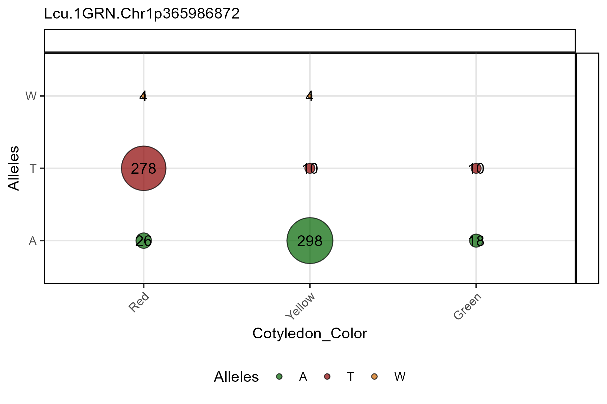
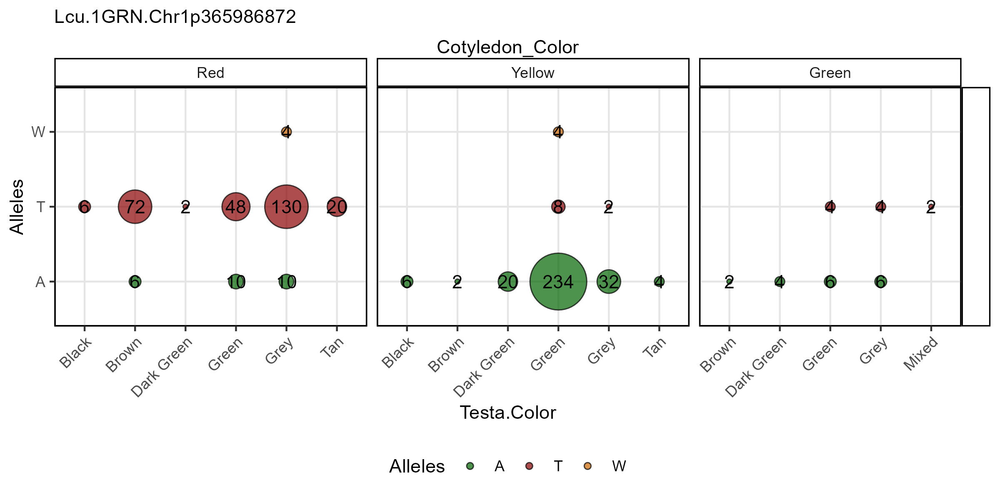
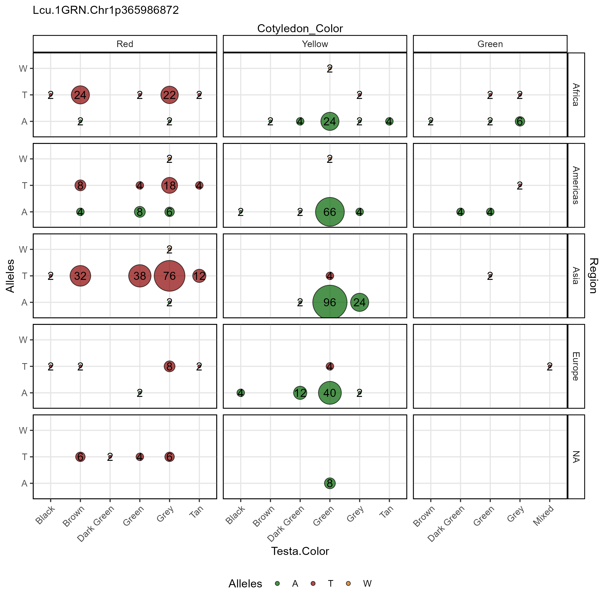

The function gg_Marker_Bubble() creates marker plots
with your myY and myG GWAS input files.
Load data
Note:
header = T
# Load genotype file (note: header = T)
myG <- read.csv("gwaspr_myG_hmp.csv", header = T)
# Load phenotype file
myY <- read.csv("gwaspr_myY.csv")
# Convert our nominal trait from numeric to factor.
myY <- myY %>%
mutate(Cotyledon_Color = mv(Cotyledon_RedvsYellow, c(1, 0, NA), c("Red", "Yellow", "Green")),
Cotyledon_Color = factor(Cotyledon_Color, levels = c("Red", "Yellow", "Green")))
myCV <- read.csv("gwaspr_myCV.csv")
myY <- myY %>% left_join(myCV, by = "Name")
myY[1:10,]## Name DTF_Sask_2017 DTF_Nepal_2017 Cotyledon_RedvsYellow
## 1 CDC_Asterix_AGL 54.7 128.0 0
## 2 CDC_Rosie_AGL 59.0 123.3 1
## 3 X3156.11_AGL 60.7 125.3 1
## 4 CDC_Greenstar_AGL 56.7 121.0 0
## 5 CDC_Cherie_AGL 54.3 125.3 1
## 6 CDC_Glamis_AGL 59.0 123.0 0
## 7 CDC_Gold_AGL 54.0 125.3 0
## 8 CDC_Imax_AGL 53.0 128.7 1
## 9 CDC_Impower_AGL 57.0 123.3 0
## 10 CDC_KR.1_AGL 57.0 121.7 1
## Cotyledon_Color Entry a b c Origin
## 1 Yellow 1 0.007269310 -1.201707e-03 -0.0003173782 Canada
## 2 Red 2 0.020925213 -1.752062e-03 -0.0015340225 Canada
## 3 Red 3 0.011019354 -1.114926e-03 -0.0006771650 Canada
## 4 Yellow 4 -0.007194842 -5.607040e-05 0.0009439957 Canada
## 5 Red 5 0.001167160 -7.040853e-04 0.0002219715 Canada
## 6 Yellow 6 0.011720647 -1.234765e-03 -0.0007444896 Canada
## 7 Yellow 7 -0.009512816 -9.853332e-05 0.0011238201 Canada
## 8 Red 8 0.005803829 -1.210779e-03 -0.0001005016 Canada
## 9 Yellow 9 0.012545983 -1.396606e-03 -0.0008239436 Canada
## 10 Red 10 0.008388588 -7.986330e-04 -0.0006355631 Canada
## Region Testa.Color DTF.Culter P1 P2 P3 P4 P5 P6 P7
## 1 Americas Green 7 0.000000 0 0 0 0.000000 0.00000 0.048938
## 2 Americas Grey 8 0.000000 0 0 0 0.000000 0.00000 0.000000
## 3 Americas Grey 8 0.000000 0 0 0 0.000000 0.00000 0.169824
## 4 Americas Green 7 0.000000 0 0 0 0.000000 0.00000 0.258426
## 5 Americas Grey 7 0.000000 0 0 0 0.090267 0.00000 0.111004
## 6 Americas Green 8 0.000000 0 0 0 0.003119 0.00000 0.182356
## 7 Americas Green 7 0.088823 0 0 0 0.000000 0.01545 0.116633
## 8 Americas Grey 7 0.000000 0 0 0 0.118120 0.00000 0.202169
## 9 Americas Green 7 0.000000 0 0 0 0.000000 0.00000 0.220574
## 10 Americas Brown 3 0.000000 0 0 0 0.030931 0.00000 0.284686
## P8 STR_Group
## 1 0.951062 P8
## 2 1.000000 P8
## 3 0.830176 P8
## 4 0.741574 Mix
## 5 0.798729 Mix
## 6 0.814525 P8
## 7 0.779093 Mix
## 8 0.679711 Mix
## 9 0.779426 Mix
## 10 0.684383 MixSingle marker, single trait
Specifying a trait.x and markers along with
your genotype and phenotype data as xG and xY
is needed to create marker plots.
Note: one of
trait.x,trait.y,facet.rows,facet.colsmust be set to= "Alleles"
# Plot
mp <- gg_Marker_Bubble(
# Genotype data
xG = myG,
# Phenotype data
xY = myY,
# Select traits to plot
trait.x = "Cotyledon_Color",
# Select markers to plot
markers = "Lcu.1GRN.Chr1p365986872" )
# Save
ggsave("figures/gg_Marker_Bubble_01.png",
mp, width = 6, height = 4 )
All options
gg_Marker_Bubbles() contains a number of different
options for customizing the marker plots.
Note: one of trait.x, trait.y,
facet.rows, facet.cols must be set to
= "Alleles".
# Prep data
markers <- c("Lcu.1GRN.Chr1p365986872")
# Plot
mp <- gg_Marker_Bubble(
xG = myG,
xY = myY,
trait.x = "Cotyledon_Color",
markers = markers,
trait.y = "Alleles",
facet.rows = NULL,
facet.cols = NULL,
marker.colors = gwaspr_Colors,
remove.hets = F,
remove.N = T,
legend.pos = "bottom",
legend.rows = 1,
title = NULL,
subtitle = paste(markers, collapse = "\n") )
# Save
ggsave("figures/gg_Marker_Bubble_02.png",
mp, width = 6, height = 4 )
Facet grouping
Column facetting
# Plot
mp <- gg_Marker_Bubble(
# Genotype data
xG = myG,
# Phenotype data
xY = myY,
# Select traits to plot
trait.x = "Testa.Color",
# Select markers to plot
markers = "Lcu.1GRN.Chr1p365986872",
# Select a trait for col facetting
facet.cols = "Cotyledon_Color" )
# Save
ggsave("figures/gg_Marker_Bubble_03.png",
mp, width = 8, height = 4 )
Row facetting
# Plot
mp <- gg_Marker_Bubble(
# Genotype data
xG = myG,
# Phenotype data
xY = myY,
# Select traits to plot
trait.x = "Testa.Color",
# Select markers to plot
markers = "Lcu.1GRN.Chr1p365986872",
# Select a trait for col facetting
facet.cols = "Cotyledon_Color",
# Select a trait for row facetting
facet.rows = "Region" )
# Save
ggsave("figures/gg_Marker_Bubble_04.png",
mp, width = 8, height = 8 )